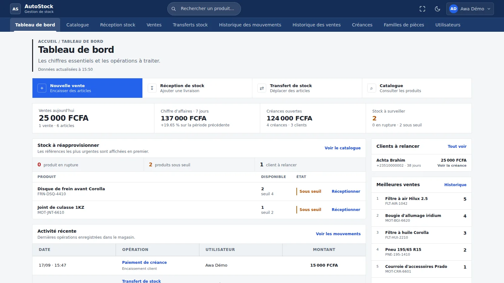
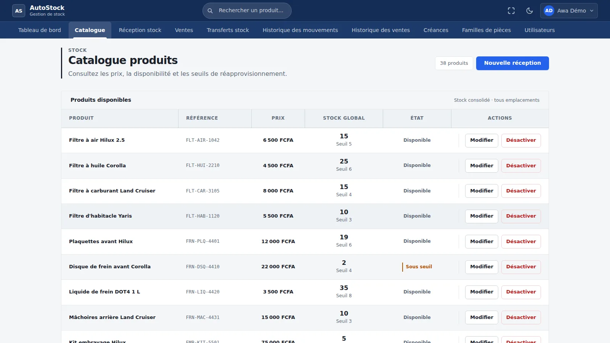

Catalogue et recherche
Recherche par nom ou référence, tolérante aux fautes de frappe et aux accents (PostgreSQL pg_trgm + unaccent). Pagination côté serveur, fiche produit avec stock par emplacement.
Projet client · pièces détachées automobiles
Une application web qui relie ce qui entre en stock, ce qui est vendu et ce qui reste à encaisser.
Je l’ai conçue et développée pour un magasin de pièces détachées : API Java / Spring Boot, interface Angular, base PostgreSQL. Elle a été déployée sur un VPS OVHcloud ; la démonstration ci-dessous tourne en local avec des données fictives.

Construit avec
Dans ce magasin, une vente ne s’arrête pas à l’encaissement : une pièce peut être en surface ou en réserve, un client peut payer une partie et revenir plus tard.
Démonstration
Enregistrement continu d’un vrai parcours dans le navigateur, en mode clair. Sans voix : des légendes décrivent chaque étape. Toutes les données sont fictives.
Enregistré le 17 septembre 2026 avec Playwright sur l’application réelle (API Spring Boot + interface Angular + PostgreSQL), à partir d’un jeu de données fictif. Télécharger la vidéo (MP4, 9 Mo)
Fonctionnalités
Chaque écran ci-dessous est une capture de l’application lancée localement.

Recherche par nom ou référence, tolérante aux fautes de frappe et aux accents (PostgreSQL pg_trgm + unaccent). Pagination côté serveur, fiche produit avec stock par emplacement.
Saisie manuelle d’un produit nouveau ou existant, répartie entre surface et réserve. Import CSV jusqu’à 500 lignes : modèle, aperçu ligne par ligne, sélection, rapport téléchargeable.
Panier multi-articles, prélèvement du stock par emplacement, refus si le stock est insuffisant. Paiement complet ou partiel rattaché à un client.
Solde calculé à partir du journal des versements, ancienneté et retard, remboursements successifs avec historique.
Transferts entre réserve et surface, seuils d’alerte, journal des entrées, sorties et transferts regroupés par opération.
Rôles propriétaire et vendeur, mot de passe temporaire à changer à la première connexion, désactivation des comptes, familles de pièces.
Architecture
Le backend est un seul déployable découpé en trois modules Maven. Les règles de vente et de paiement se testent sans démarrer Spring ni la base.
RecordPaymentUseCase.javastock-application
// Verrou exclusif sur la vente : deux encaissements
// simultanés ne peuvent pas lire le même ancien solde.
private RecordPaymentResult doRecord(
RecordPaymentCommand command) {
Sale sale = saleRepository
.findByIdForUpdate(command.saleId())
.orElseThrow(() ->
new SaleNotFoundException(command.saleId()));
Payment payment = sale.recordPayment(
command.amount(),
command.receivedBy(),
LocalDateTime.now(clock));
saleRepository.save(sale);
...
}Le cas d’usage s’exécute dans un TransactionRunner (port) ; l’agrégat Sale refuse un versement si la vente est soldée ou si le montant dépasse le reste dû. Le commentaire est ajouté pour cette page.
Le domaine est modeste : une architecture en couches classique aurait suffi pour livrer. J’ai choisi le DDD tactique et l’architecture hexagonale en connaissance de cause, aussi pour pratiquer sur un vrai besoin client ce que j’étudiais en master.
Chaque décision est documentée dans une fiche ADR : lire les 6 décisions d’architecture.
Vente, stock et paiements changent ensemble : une seule base PostgreSQL et une transaction suffisent, sans transactions distribuées. Les modules séparent les responsabilités à la compilation.
pom.xml
Le montant payé est recalculé à partir du journal des versements. Money associe un BigDecimal à une devise et refuse les opérations entre devises.
Sale.java
Verrou optimiste (@Version) sur les emplacements de stock, verrou pessimiste pour les remboursements, clé Idempotency-Key pour rejouer sans doublon une vente, une réception ou un transfert.
IdempotencyFilter.java
JWT d’accès de 15 minutes et jeton de renouvellement de 7 jours dont seule l’empreinte SHA-256 est stockée. Cookies HttpOnly et SameSite=Strict, mots de passe BCrypt.
AuthController.java
Les exceptions métier deviennent des réponses ProblemDetail (RFC 9457) avec un code stable, que l’interface Angular traduit en messages clairs.
web/handler
Composants standalone, formulaires réactifs et signals. Des intercepteurs renouvellent la session après un 401 ; une garde protège un import CSV en cours.
refresh.interceptor.ts
Tests
Rapports Maven Surefire du 17 septembre 2026 : 474 tests exécutés, aucun échec, aucune erreur, aucun test ignoré.
mvn verify côté backend, build et tests côté frontend.Stack
pg_trgm, unaccent, index GINNote de l’auteur
Ce projet part d’un besoin réel, pas d’un exercice. Un magasin de pièces détachées où une même pièce peut être en surface de vente ou en réserve, et où un client peut payer une partie d’une vente et revenir plus tard. Ces deux phrases décident de presque toute l’architecture.
Je l’ai construit seul, du modèle de domaine au déploiement. C’est aussi pour cette raison que j’ai choisi le DDD tactique et l’architecture hexagonale sur un domaine que des couches classiques auraient suffi à couvrir : je voulais les pratiquer sur un vrai besoin, avec de vraies contraintes, plutôt que sur un projet d’école.
Les 474 tests ne sont pas là pour le chiffre. Ce sont surtout les situations que je ne voulais pas voir arriver : un versement compté deux fois, un stock qui passe sous zéro, une réception rejouée par un double clic.
Cette page dit ce que l’application fait, comment elle est construite, et ce qu’elle ne fait pas. Le code est consultable.
Cheikh Ali CheikhNantes, septembre 2026
Statut du projet